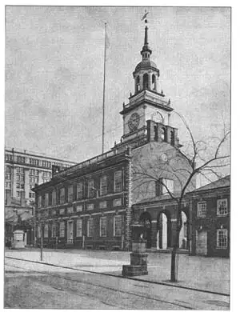
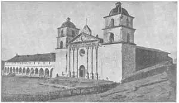

JUST suppose you had to go to a wild, unexplored land and live there the rest of your life. What kind of house would you build? Probably you would build a log cabin if you had an ax and could find plenty of trees. But if you had never heard of a log cabin, the chances are you would build some other kind of shelter that you had heard of—a cave perhaps.
The first English settlers who landed in America had never seen a log cabin. What they thought of first were the little huts of the charcoal burners that they had seen in the woods in England. These huts were made of branches and twigs woven together, somewhat as a wicker chair is woven. The early settlers built their shelters like the charcoal huts and put steep-pointed thatched roofs on them. Do you know what a thatched roof is? It’s a roof made of straw. When these huts were finished, they must have looked very much like the wigwams of the Indians.
But what about log cabins? Surely the early settlers used them? Yes, they did use them as soon as the Swedes had settled in Delaware. The Swedes had lived in log cabins in Sweden and when they came to America where logs were easy to get, they built log cabins there also. Then the use of log cabins quickly spread. Log cabins were used by the pioneers and settlers as they pushed west away from the seacoast, for trees were plentiful.
At least one log cabin has become famous. It is the one Abraham Lincoln was born in. Now the whole cabin is kept in a big marble building built especially to hold it and protect it at Hodgenville, Kentucky, Some of the early buildings that the settlers from England built were Gothic in style. At Jamestown in Virginia the settlers built a simple little brick Gothic church which has since fallen to pieces. But another little early church called St. Luke’s is still standing. St. Luke’s has the pointed windows and steep roof of the Gothic, and this seems strange because the Renaissance had reached England some years before America was settled by Englishmen and the Gothic style had gone out of style in England.
In New England as well as in Virginia some of the early houses were Gothic. They were built of wood and had windows opening at the side on hinges (the way a door opens), with many small panes of glass in each window—casement windows they are called. Generally the second story of these houses stuck out a foot or so beyond the first story so that there was an overhang in front. Several of these old Gothic houses are still standing.
After a while books about architecture began to find their way into the American colonies. These books came from England where Renaissance architecture was in full swing. The books had plans and diagrams or drawings in them which the American carpenters found very handy guides for making houses. King George was reigning in England, first King George I, then George II, then George III, and so the English Renaissance architecture was called Georgian architecture. And after the first few Gothic buildings our early American architecture was Georgian too. We call it now Georgian Colonial or sometimes just Colonial.
Most of the Georgian Colonial houses were made of wood in the North and of brick in the South, but in Pennsylvania stone was used. The houses weren’t built by regular architects, but by the master carpenters who used the books sent from England to guide them. The houses were so suited to this country that architects to-day still often use this Georgian Colonial style for houses.
Besides Georgian Colonial there was Dutch Colonial much liked by the Dutch settlers in New York. The Dutch Colonial houses generally had a roof that sloped down beyond the front of the house to cover the porch. The Dutch Colonial style is also being used again in modern houses in America.
The Colonial houses were generally made plain and simple. They were never decorated much, like Baroque buildings, and that is one reason they seem so charming to us. Most of the decoration was carved in wood on the doorways, the mantel-pieces, the stairways, and the ceilings. Sometimes there were wooden pilasters or half columns or columns in the Roman style at each side of the door. Often there was a transom window over the front door. This would be decorated with carved wooden tracery sometimes in the shape of a fan, and called a fan-light.
Many of these old houses of colonial times are still standing. Most of them, of course, are in the Eastern States, which were settled first. Some are famous for other reasons than architecture—Mount Vernon, for instance, because it was the home of George Washington. Mount Vernon on the Potomac is visited every year by thousands of people who come to see where the Father of his Country lived.
Independence Hall in Philadelphia is famous as the building where the American Declaration of Independence was signed. That is how it got its name. It was designed by a lawyer. It is a fine example of Georgian Colonial architecture in brick. The tower reminds us of one of Sir Christopher Wren’s steeples in London. In Independence Hall is the famous Liberty Bell which rang so hard that it cracked.
The man who wrote the Declaration of Independence was Thomas Jefferson, later President of the United States. You may be surprised to learn that Thomas Jefferson was one of the best architects of his time. Architecture was not his business but his hobby. He was a great believer in old Roman architecture and he designed many buildings that were Roman in style. One of these is Monticello, Jefferson’s own home. He also made the design for the University of Virginia, with the buildings arranged around the sides of a big square lawn or campus. The white columns against the dark red brick of the buildings are very attractive.
Jefferson’s work in architecture was mostly done after the Revolution. We can hardly call it Colonial, because the country was no longer part of Great Britain’s colonies. A better name would be Early Republican.
Then came a time when almost all buildings were made with Greek details—Greek columns, Greek shapes. An architect named Robert Mills made a Greek facade of columns for the Treasury Building at Washington. Mills also made the first monument to George Washington—a huge Doric column with Washington’s statue on top which stands in Baltimore. It was the same Robert Mills who designed the tallest building in the world at that time, the Washington Monument in Washington. The Washington Monument is a huge obelisk (do you remember the Egyptian obelisks like Cleopatra’s Needle?), which was not finished for many years after it was begun.

No.84-1 INDEPENDENCE HALL, PHILADELPHIA（费城的独立大厅）
But while the United States was being born in the East, what about the western side of America?
Well, in the Southwest and far West most buildings were Spanish. Mexico had been settled by people from Spain. The Jesuit priests built churches in Mexico, Texas, and New Mexico in the Baroque style. These buildings are called Spanish Colonial because they were built in Spanish colonies.
Now, about the time of the American Revolution some Spanish monks called Franciscans pushed into California from Mexico. In California the Franciscans built churches and other buildings. Their settlements were called missions. They were built along the coast, a day’s journey apart, on a road called the King’s Highway. A mission was very much like a monastery of the Middle Ages. But as the Franciscans had no one to help them but Indians, they built the missions very plainly and solidly.
Each mission had a church connected by cloisters with other buildings around a courtyard. The buildings were made usually of sundried brick or adobe.
This Mission style has been used by present-day architects too, just as the Georgian and Dutch Colonial styles have been used. The Spanish Colonial seems suited to the warm climate of California and the Southwest better than any other kind of architecture. In California many of the old missions may still be seen, some in ruins, some carefully preserved.

No.84-2 MISSION, SANTA BARBARA, CALIFORNIA（加利福尼亚圣巴巴拉教区）
Another kind of Spanish Colonial architecture grew out of the architecture of the Indians. Many boys and girls think of the Indians as having only wigwams of bark or skins. But the Indians of the Southwest—of Arizona and New Mexico—had houses built of adobe. They were really apartment houses, because they had rooms for many families. They were called pueblos. Pueblos had flat roofs because there was so little rain. They were often several stories high and had ladders outside, instead of stairs inside, to get from one story to another.
The Spanish colonists who settled in New Mexico copied this pueblo style from the Indians. You can always tell houses in pueblo style because the flat roofs are on logs whose ends stick out from the top of the walls. The very old Governor’s Palace in Santa Fe is built in this pueblo style, although it is only one story high.
New Orleans, settled by the French, introduced from France an architecture with long French windows and iron balconies.
So you see that America in its early days used many different kinds of architecture. I’ll make a list of them for you so you can remember them better. If you want to test yourself see if you can name one fact about each kind. Here is the list:
Log cabins Gothic Colonial
Georgian Colonial
Dutch Colonial
Early Republican
Spanish Mission Spanish Indian (pueblo)
French Colonial
假设你要到一个荒草丛生，人迹罕至的地方度过你的余生。你要建什么样的房子呢？如果有斧子或足够的树木，你也许会建一个小茅屋。但如果你从未听说过小木屋的话，你也许就会按听说过的房型来建造——也许是岩洞。
来到美洲的英国殖民者从未见过小木屋。他们首先想到的小茅屋是英国木炭翁建的房子。这些房子是由树枝和小树杈交叉织在一起搭建的，宛如编织起来的柳条凳。早期的殖民者将他们的避身处建成木炭小屋，并且在上面加上尖尖的茅草屋顶。这些小茅屋建好后，看起来就像是印第安人的棚屋了。
但小木屋又是怎么回事呢？你确信早期的殖民者也使用这些木屋吗？是的，瑞典人占据特拉华州后就开始建造小木屋。瑞典人在瑞典一直居住小木屋，直到他们来到美洲，那儿的圆木俯拾即是，他们也在那儿建了木屋。然后小木屋这种建筑方式就广泛传开了。小木屋被拓荒者和殖民者向西部和东部海岸进发时广泛使用，因为那儿有足够的权木。
至少，有一间小木屋后来非常有名。亚伯拉罕·林肯就出生在这间小木屋里。如今，这间小木屋保存在肯塔基州豪德根威的一座大理石大楼内，那是专门为保护它而建造的。
英格兰早期殖民者所建的房子部分是哥特式风格。殖民者在弗吉尼亚的詹姆斯镇建造了一个简单的砖砌哥特式教堂，现已化为尘土。但还有一座叫做圣卢克的小教堂，留存至今。圣卢克教堂有带尖顶的窗子，以及哥特式的陡峭屋顶，这看起来很奇怪，因为文艺复兴运动在英国殖民者到达美洲之前就已传至美洲，而哥特式风格这时已经在欧洲消失了。
在新英格兰和弗吉尼亚，有一些早期建造的房子是哥特式的。它们由木头建成，在铰链（门开合的地方）的部位安装了窗户，每扇玻璃窗上都有窗格——他们称它为窗扉。一般说来，房子的第二层伸出墙角，或超出第一层，所以房屋的正门就有一个 悬垂部分。还有部分老式的哥特式房子依然挺立。
又过了一段时间，有关建筑的书籍正打入美国殖民地市场。这些书籍来自英国，那时的文艺复兴式建筑风靡一时。这些书里有设计图、图表、草图等，这些对美国木匠而言简直就是操作指南。那时乔治王朝统治英国，首先是乔治一世，然后是乔治二世，最后是乔治三世，于是后来的英国文艺复兴式建筑就叫做“乔治式建筑”。所以除几座哥特式建筑外，美国的早期建筑都称作乔治式建筑了。我们称它为乔治殖民地时期风格，或干脆叫做殖民地时期风格。
大部分乔治殖民地时期的建筑，北方以木材为材料，南方则以砖块为原料，但宾夕法尼亚州用的则是石头。这些房子并不是一般建筑师建的，而是由大师级木匠根据来自英国的书籍为指导建造的。书本上的房屋建筑方式与这个国家很是相称，直到现在乔治殖民地时期的建筑风格仍常常被使用。
除了乔治殖民地时期风格，纽约的荷兰殖民者也非常喜欢荷兰殖民时期的建筑。荷兰殖民地时期的房屋正面常常会有一个斜坡覆盖着玄关。荷兰殖民地时期风格在现代的美国住房中也常被采用。
殖民地时期的房屋总的来说，造型平庸而简单。它们从不会像巴洛克式建筑那样有很多装饰，这也是它们为什么看起来这么舒服的原因。大部分的装饰都刻在门廊的木头上、毯子上、楼梯上，以及天花板上。门上有时还会有木质的壁柱或古罗马风格的半柱。前门上方还时常会有气窗。上面常常饰有扇形的花式窗格，这些花式窗格叫做“楣窗”。
美国至今还有许多殖民地时期的房子。大部分是在东部几个州，那儿是最早的殖民地。有些并不是因为建筑而著名——譬如芒特弗农。它是乔治·华盛顿的故乡。每年都有成千上万的游客来到波托马可河的芒特弗农，参观美国国父居住的地方。
美国《独立宣言》是在费城的独立大厅签署的，独立大厅也因此闻名。这也是它名字的由来。这是由一位律师设计的。它是乔治殖民地砖式建筑物的一个典型。这个建筑物会让你想起伦敦克里斯朵夫·雷恩的尖顶造型。大厅内有著名的解放之铃，因为有太多人敲，现已破碎。
起草美国《独立宣言》的杰斐逊后来当了美国总统。也许你很惊讶，杰斐逊同时还是同一时期最优秀的建筑师。建筑不是他的专职，而是他的爱好。他是一位狂热的罗马式建筑的爱好者，而且他还设计了许多罗马式风格的建筑。其中一座就是蒙蒂赛洛庄园，那是杰斐逊的家。他还设计了弗吉尼亚大学的草图，将大学的建筑设计为环绕大操场或校园的模样。以深红色砖墙为背景的白色柱子显得非常醒目。
杰斐逊的建筑作品几乎都完成于美国独立之后。我们很难把它们叫做殖民时期风格，因为此时的美国已不再属于大不列颠帝国了。叫做早期共和国风格还是比较符合的。
之后的一段时期几乎所有的建筑物都呈希腊式风格——希腊柱式，希腊造型。在华盛顿，有一位叫做罗伯特·米尔斯的人为财政部大厦设计了希腊正门柱子。米尔斯还为华盛顿设计了第一块纪念碑——屹立在巴尔的摩的一根巨型陶立克式柱子，上面是华盛顿的雕像。罗伯特·米尔斯同时也是设计那时世界上最高建筑的人，那就是华盛顿的华盛顿纪念碑。华盛顿纪念碑是一座巨型方尖碑（你还记得埃及的方尖碑如克 里奥佩特拉之针吗），这座方尖碑直到动工很多年后才得以完成。
但是当美利坚合众国屹立于东部时，美国的西部世界又是怎样呢？
在美国的西南部和遥远的西部，大部分建筑物都呈西班牙风格。来自西班牙的许多殖民者建造了墨西哥城。耶稣会士在墨西哥、德克萨斯，以及新墨西哥建造了许多巴洛克式风格的教堂。这些建筑叫做西班牙殖民风格，因为它们都建在西班牙的殖民地上。
在美国独立战争打响的时候，一些方济各会士开始从墨西哥向加利福尼亚挺进。方济各会士在加州建造了许多教堂和其他建筑物。它们的定居点叫做布道点。它们沿西海岸建立，每隔一天的行程就有一座，分布在一条称作“国王高速公路”上。布道点与中古世纪的寺院很是相像。但是因为只有印第安人的帮助，他们的布道点非常平庸，但也非常坚固。
每一个布道点都由回廊连接，环绕着一个院子。这些建筑物常由被太阳晒干的砖块或土坯建成。
这种布道点风格现今也被许多建筑师采用，就像乔治式风格和荷兰式风格常被采用一样。西班牙殖民地风格看起来与加州的温暖气候非常相合，而且似乎比其他建筑都要适合西南部气候。在加州，仍能看到许多老式的布道院，有些已成废墟，有些保存完好。
另外一种西班牙殖民地式建筑是在印第安人建筑的基础上衍生出来的。许多年轻男女认为印第安人只有树皮或动物皮毛建成的小茅屋。但是西南部的印第安人——亚利桑那州和新墨西哥州——则有土坯建成的房屋。它们是真正意义上的套房，因为里面可容纳很多家庭。它们叫做普韦布洛人。普韦布洛人的房屋是平顶，因为那儿少雨。每栋楼都有好几层高，梯子不在里面，而在外面，层层相连。
在新墨西哥的西班牙殖民者从印第安人那里学到了这种风格。你可以很轻易地辨别出普韦布洛风格，因为平屋顶都建在圆木上，屋顶的两端都要伸出墙壁。圣达菲殖民者统治的旧址就是这种普韦布洛风格，尽管它只有一层楼高。
由法国殖民者建立的新奥尔良的建筑物，引进过法国式建筑，有长长的法国窗子，以及铁质的阳台。
所以，如你所见，早期美国的建筑有很多风格。为了方便记忆，我列了一个单子。你可以通过自己是否记得某种建筑的事实来测试一下自己。列表如下：
小木屋
殖民地的哥特式风格
乔治殖民时期风格
荷兰殖民风格
共和国早期风格
西班牙布道点风格
普韦布洛风格
法国殖民风格